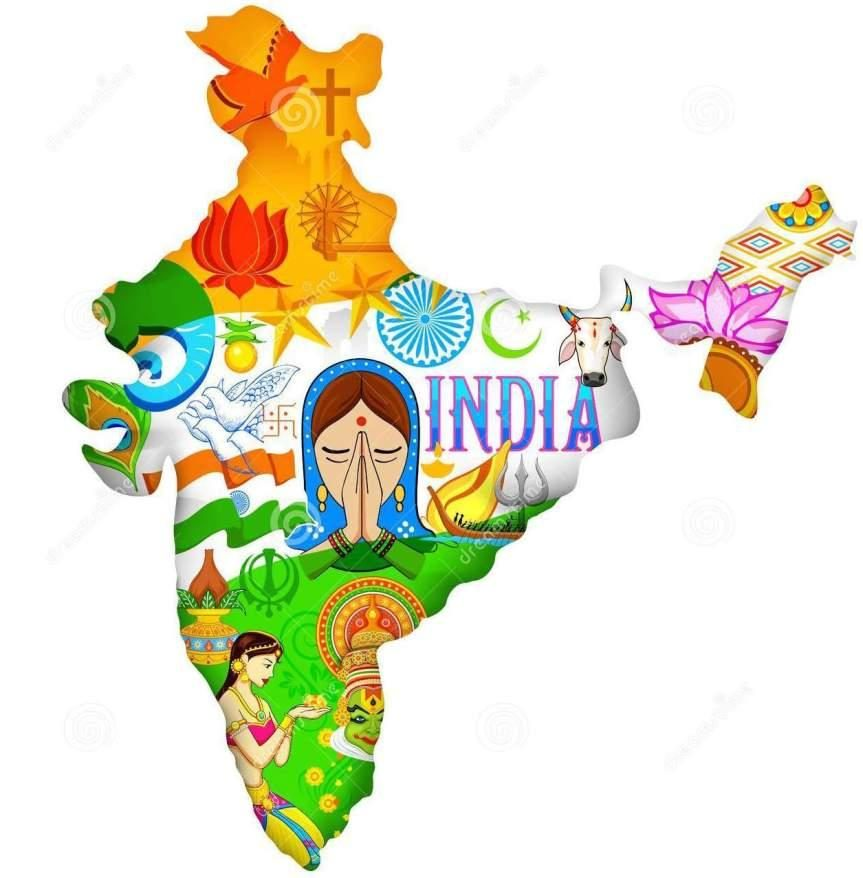
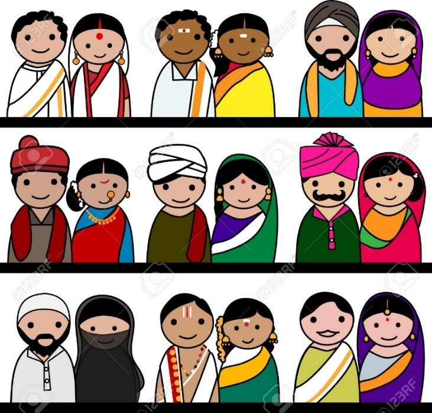

Sociology · Paper II · Chapter 17
Society in India: Diversity and UnityMedium priority
Handout only (class notes not matched yet)Handout pp. 2-6Mains PYQs: 0 quotedPrelims: not asked
Open any Paper II answer with the bundle of contradictions, then show that unity rests on culture, administration and the Constitution.
Chapter map#
- Indian society
Diversities
- Race and ethnicity
- Religion
- Language
- Tribes and castes
- Regions
Fear
- Conflict
- Balkanisation (Churchill)
Socio-cultural unity
- Srinivas: religious
- Karve: joint family
- Dumont: caste
Political unity
- Chakravartin ideal
- British rule
- Integration of states
Unity in diversity
- Salad bowl
- Syncretism
- Constitution
Exam lens#
The story first#
In simple words#
- India is full of different races, religions, languages, tribes and castes, yet it stays one society.
- The glue is a shared religious and cultural world (Srinivas), the joint family (Karve), the caste framework (Dumont), and one political-administrative system.
- India is a salad bowl (communities keep their identity) with syncretism (blending of traditions): unity in diversity, not unity through uniformity.
| Term | In plain words |
|---|---|
| Cultural pluralism | Many cultures living together, each respected in the larger polity and society. |
| Balkanisation | Break-up of a country into small hostile units; Churchill predicted it for India. |
| Salad bowl | Communities coexist without assimilation, unlike a melting pot. |
| Syncretism | Blending of elements from diverse traditions into hybrid forms. |
| Chakravartin | Title of pan-India overlordship, with Raja-dhiraj. |
| 8th Schedule | Lists 22 languages recognised by the Government of India. |
1 · INDIAN SOCIETY: AN INTRODUCTION#
Handout only
- Indian society is characterized by vibrant cultural pluralism that has evolved over millennia.
- Despite numerous and diverse social identities, Indian society maintains cohesion and unity.
- Indians demonstrate remarkable tolerance and accommodation of different ways of life.
- Indian social life is marked by peaceful and harmonious coexistence of different social groups and their expression into a single national framework.
- As Jawaharlal Nehru aptly described in The Discovery of India, “India is …a bundle of contradictions held together by strong but invisible threads.”
2 · India: A Land of Diversities#
Handout only




- Indian society is characterized by numerous diversities.
- The very multiplicity of diversities can be truly perplexing.
- In India, there are numerous racial and ethnic groups, multiple languages, religious pluralism, hundreds of tribes, and thousands of castes.
- In Indian society, there are diverse forms of marriage and family, styles of music, dance, drama, art and architecture.
- In India, we come across innumerable customs, a wide range of faiths, a large number of political parties and regional histories.
- Little wonder then that India has been variously described as “a sub-continent masquerading as a nation”, and as “a veritable museum of races, cultures, languages, and religions”.
- India is a land of many races, ethnic groups, religions, and cultures At the outset, a foreigner will be struck by the remarkable racial diversity in India.
- The Indian population belongs to various racial and ethnic stocks; including Aryans, Dravidian, Proto-Australoid, Mongoloid, Negroid, and many which are an outcome of their admixture.
- India is home to multiple religions. All the major faiths of the world have a substantial following in India.
- Apart from the major ones like Hinduism, Islam, and Christianity - there are scores of others with fewer members but still an important part of India’s social and cultural fabric.
- These include Buddhists, Jains, Sikhs, Parsis, Jews, and a small but growing population of atheists and rationalists.
- Then, there are numerous tribal religious beliefs and rituals ranging from ancestor worship to nature worship, totem worship, and spirit worship. Various religious communities, particularly the bigger ones - like Hindus & Muslims, are further divided into numerous sects.
- There are scores of languages, dialects, and scripts that make India’s social landscape even more complex.
- The 8th Schedule of the Indian Constitution lists 22 languages recognized by the Government of India, while the number of spoken languages is far greater.
- Yet another mystifying phenomenon in Indian society is the multiplicity of castes.
- By the most conservative estimates, there are thousands of castes.
- Moreover, castes vary regionally. Castes not only differ in traditional occupations but also in terms of social status and power.
- These diversities on the axes of traditional identities of caste, religion, ethnic and linguistic community are further complicated when they are super-imposed on modern axes of diversities like class and occupation.
- There are also important regional variations in food habits, culture, level of economic development, and political organisation.
- Multiple social identities and hierarchies have been erroneously interpreted as a sign of danger for Indian society - that the multiplicity of social groups, if left uncontrolled, will be in a perpetual state of conflict.
- Some, like Winston Churchill, prophesised the balkanisation of India once the British exited the country.
3 · Unity in India#
Handout only

- While the diversities in India are undeniable, and are frequently a cause of tensions and social conflicts, equally unmistakable and omnipresent is a strong undercurrent of unity.
- Unity in India is both, modern and ancient.
- It is multifaceted and enduring. It is politico-administration as well as social and cultural.
- Socio-cultural unity Indian society is held together by strong threads of cultural unity.
- For M.N Srinivas, the unity of India is essentially religious.
- The epics and Puranic legends, numerous temples, places of pilgrimage and the whole sacred geography have all contributed to build a truly pan-India culture.
- Other aspects of social life, like the joint family system also cuts across regions and communities (Irawati Karve).
- The framework and ideology of caste is also broadly the same throughout India (Louis Dumont).
- Politico-administrative unity The idea of the whole country under a single sovereign is an ancient one in Indian thought.
- Yagyas like Ashwamedha and Rajsuyya, and titles like Chakravartin and Raja-dhiraj indicate the notion of pan-India overlordship. In fact, many rulers from Ashok to Aurangzeb sought to realise this political vision.
- British rule created new conditions for the unity of India.
- It brought under a single administration the entire population of the country.
- Railways and the postal system led to an exchange of people and ideas on an unprecedented scale.
- The rise of nationalism in the 19th and 20th centuries shows that the people had become conscious of unity as a political necessity.
- After independence, politico-administrative integration was carried out by the national leadership by the integration of princely states in the Indian Union, and through various Constitutional mechanisms.
- Indian Society is characterized by Unity in Diversity In conclusion, diversities in India do not necessarily result in divisions and conflicts.
- Our unity is not premised on uniformity.
- Heterogeneity in our society is not a source of weakness, but a cause for celebration and strength.
- The kaleidoscopic variety of traditions and customs enriches the cultural landscape.
- India’s cultural mosaic is made up of numerous linguistic, religious, and ethnic groups that fit beautifully together.
- Indian society is appropriately described as a salad bowl, characterized by healthy and harmonious coexistence of different communities, without assimilation.
- Indian culture is also characterized by syncretism i.e. the blending of different elements from diverse traditions into hybrid forms.
- India’s template of cultural pluralism, also enshrined in the Indian Constitution, celebrates the peaceful coexistence of diverse groups, each of which is valued and respected in the larger polity and society.
Traps#
Common mix-ups and the rule for the exam hall
| Trap | What goes wrong, and the rule |
|---|---|
| Salad bowl vs melting pot | The handout says communities coexist without assimilation. Exam-hall rule: India = salad bowl, never melting pot. |
| Who says what | Srinivas: religion; Karve: joint family; Dumont: caste ideology. Exam-hall rule: attach each unity thread to its thinker. |
| Unity vs uniformity | Unity is not premised on uniformity; diversity is a strength. Exam-hall rule: write unity in diversity, not uniform culture. |
Recall sheet#
Read once, hide it, then rebuild the chapter from memory.
- Who called India a bundle of contradictions? Nehru, in The Discovery of India
- How many languages are in the 8th Schedule? 22
- Whose view is that unity is essentially religious? M.N. Srinivas
- Who linked unity to the joint family? Irawati Karve
- Who linked unity to the caste framework? Louis Dumont
- Who prophesied balkanisation? Winston Churchill
- Salad bowl means? Communities coexist without assimilation
- What is syncretism? Blending of elements from diverse traditions into hybrid forms
Abbreviation column#
Meanings are plain-language aids; verify before quoting
| Short form | Full form | One-line meaning |
|---|
Revise#
Spaced schedule (count from the day you finish the chapter)
| Day | What to do |
|---|---|
| Day 0 | Read the Exam lens and the notes; mark the chapter done |
| Day +1 | Recall sheet: read once, hide, rebuild |
| Day +3 | Flashcards: missed ones only |
| Day +7 | Quick quiz; fix each miss against the Traps |
| Day +21 | Write two Mains answers from memory using the skeletons |
| Day +45 | Blank-page test: redraw the chapter map |
Test yourself#
Quick quiz
0 / 0 correct
Flashcards
Tap the card to flip.
Mains answer skeletons
One for each Mains PYQ quoted in the handout. Tap to open; try the answer first.